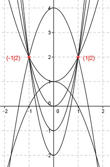

Aufgabe 5 Alle Graphen einer ganzrationalen Funktion 2. Grades gehen durch die Punkte (-1|2) und (1|2). Wie lautet die Funktionsgleichung dieser Kurvenschar? Allgemeine Form einer ganzrationalen Funktion 2. Grades: f(x) = ax² + bx + c f’(x) = 2ax + b f’’(x) = 2a 3 Bedingungen nötig - nur 2 Bedingungen gegeben --> keine eindeutige Funktionsgleichung --> es gibt eine Kurven- oder Graphenschar 1. Geht durch den Punkt (-1|2) bedeutet: f(-1) = 2 --> a * (-1)² + b * (-1) + c = 2 --> a - b + c = 2 I 2. Geht durch den Punkt (1|2) bedeutet: f(1) = 2 --> a * 1² + b * 1 + c = 2 --> a + b + c = 2 II I + II a - b + c = 2 a + b + c = 2 -------------- 2a + 2c = 4 |-2a 2c = 4 - 2a |:2 c = 2 - a c = 2a in I eingesetzt: a - b + 2 - a = 2 - b + 2 = 2 |-2 - b = 0 |:(-1) b = 0 Gesuchte Funktionsgleichung: f(x) = ax2 + (2 - a) Darstellung für 6 verschiedene a. Vom Scheitelpunkt aus von oben nach unten: a1 = -2 a2 = 1 a3 = -1 a4 = 2 a5 = 3 a6 = 4 